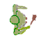
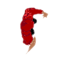
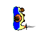
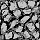
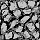

О игре
Игра в стиле oldschool RPG с видом сверху. Вы блуждаете по подземелью, сражаетесь с гоблинами, собираете трофеи и торгуетесь.
Регистрация / вход
Если у вас нет идентификатора, выполните регистрацию в нижней части окна, повляющегося на стартовой странице. Для этого придумайте и введите пароль (допускаются английские буквы, символы кроме пробела и цифры), повторите вводу пароля и нажмите "Registration". Если всё правильно, начнётся игра, а в верхнем левом углу, вы увидите свой идентификтор, присвоенный системой. Запомните его и придуманный пароль.
Если у вас уже есть идентификтор, введите его и пароль в верхнюю часть окна стартовой страницы и нажмите "Login". Если пароль верный - игра начнётся.
Управление
Поворот: клавиши со стрелками влево/вправо и буквы a/d.
Идти: клавиша со стрелкой вверх или буква w. Персонаж перемещатся только вперёд, в направлении взгляда.
Если вы вставли на предмет  , то можете подобрать его клавишей t или стрелкой вниз. Инвентарь отображается внизу экрана.
, то можете подобрать его клавишей t или стрелкой вниз. Инвентарь отображается внизу экрана.
Ниже карты расположено поле ввода и кнопка "say", нажав которую вы произнесете фразу введённую в поле ввода. Фразу услышат все, кто находится поблизости от персонажа.
Esc - выход из игры.
Экипировка
Чтобы экипировать предмет (если это возможно) произведите двойной клик по его изображению в инвентаре. Экипированные вещи в инвентаре выделяются рамкой. Предметы экипировки требуют соответствующую свободную част тела. Вы не можете взять двуручную кирку, если хотя бы одна рука занята. Сначала разэкипируйте предмет двойным кликом.
Сражение
Если вы двигаетесь на персонажа, враждебного к вам, или стоите лицом к атакующему, то ваш персонаж автоматически атакует оппонента.
Есть два вида гоблинов: и. Они враждебны к игрокам и между своими видами.
Торговля
Если вы двигаетесь на персонажа другого игрока (или он на вас) или на NPC торговца , то персонажи поворачиваются друг к другу и инициализируется торговля. Перетяните предметы из своего инвентаря и инвентаря партнёра в соответсвующие поля и нажмите кнопку "Suggest". Если вы торгуете с NPC, то вы сразу получите результат торговли, либо успех, либо отказ. В случае торговли с другим игроком, кнопка "Suggest" отправляет предложение второму игроку, у которого появляется кнопка "Agree". Если он нажмёт её - обмен состоится.
Можно выйти из режима торговли, нажав Esc.
Рытьё стен (Mining)
Если у вас экипирована кирка ( ) и ваш персонаж упирается в стену (,), он начинает её рыть. На пол сыпятся камни, которые можно подобрать.
Если продолжать рыть продолжительное время, стена исчезнет.
) и ваш персонаж упирается в стену (,), он начинает её рыть. На пол сыпятся камни, которые можно подобрать.
Если продолжать рыть продолжительное время, стена исчезнет.